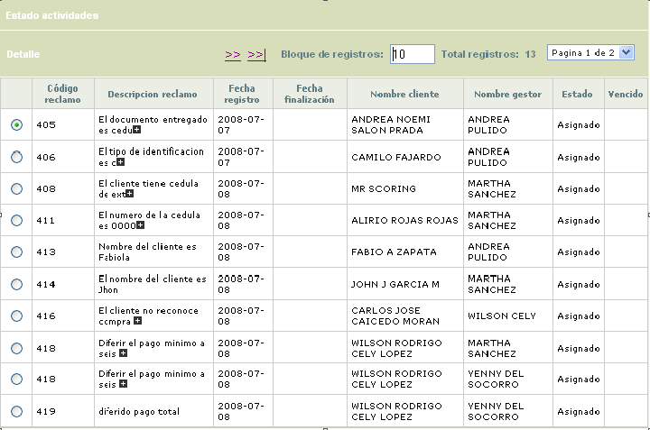
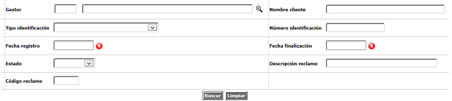
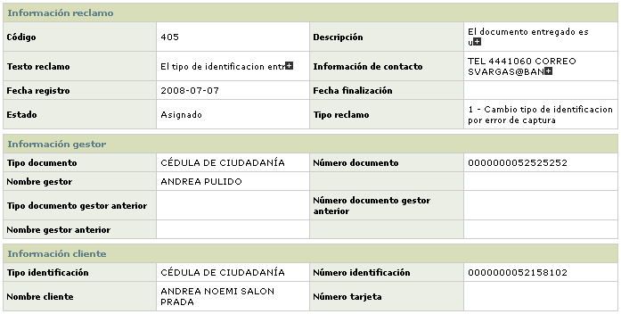
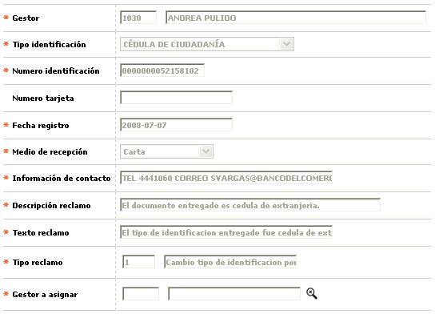

Maestro de Reclamos |
Mediante este formulario se visualizan los datos de la tabla en la cual se consultan, tramitan y reasignan los reclamos existentes, ya que permite administrar y hacer seguimiento a los mismos. El sistema mostrará los reclamos correspondientes a todos los gestores.
El sistema mostrará los reclamos que se encuentren en los diferentes estados tales como Asignados, Reasignados o Terminados, y así mismo en la última columna desplegará un triángulo cuando el reclamo se encuentre vencido según los tiempos asignados o parametrizados al mismo. Para determinar estos días, el sistema consulta la parametrización de las fechas inhábiles y festivas del calendario.
El formulario contiene la opción Detalle. Adicionalmente, cuenta con un filtro de búsqueda y las opciones Reasignar y Estado actividades.

Filtro: Se pueden realizar consultas a través de las siguientes opciones:

Gestor |
En este campo se selecciona de la lista de valores adjunta, el gestor del cual se desean consultar sus reclamos. |
Nombre cliente |
Campo alfanumérico de 30 caracteres que contiene el nombre del cliente titular del reclamo que se desea buscar. |
| Tipo de identificación | En este campo tipo combo, el usuario puede seleccionar el tipo de documento asociado al cliente al cual corresponde el reclamo que se desea consultar en la base de datos. |
| Número de identificación | Campo numérico de 16 posiciones, en el que se ingresa el número de identificación del cliente asociado con el reclamo que se quiere consultar |
| Fecha registro | Dato en formato YYYY-MM-DD que indica la fecha en la cual se radicaron los reclamos que se desean consultar en la base de datos. |
| Fecha finalización | Dato en formato YYYY-MM-DD que indica la fecha en la cual se cerraron o finalizaron los reclamos que se desean consultar en la base de datos. |
| Estado | Campo tipo combo, del cual el usuario puede seleccionar entre Asignado, Reasignado o Terminado según los reclamos que desee consultar. |
| Descripción reclamo | Campo alfanumérico de 60 caracteres que contiene la descripción del reclamo que se desea buscar. Permite utilizar el signo % en la búsqueda. |
| Código reclamo | Campo numérico de 4 dígitos que contiene el código del reclamo que se desea buscar, el cual fue asignado automáticamente por el sistema. |
Detalle: Si el usuario invoca la opción Detalle se despliega el siguiente formulario el cual contendrá la información detallada del reclamo y su trámite.

Reasignar: Cuando se utiliza esta opción, se despliega el siguiente formulario mediante el cual se puede reasignar manualmente otro gestor a un reclamo que ya tenga gestor asignado, por circunstancias que la entidad así determine.
En este formulario ninguno de los campos desplegados es modificable, excepto el campo Gestor a asignar.

Gestor a asignar |
Este campo despliega lista de valores con los gestores que se encuentren parametrizados en todas las actividades del reclamo seleccionado e indica el nuevo gestor que deberá tramitar el reclamo. |